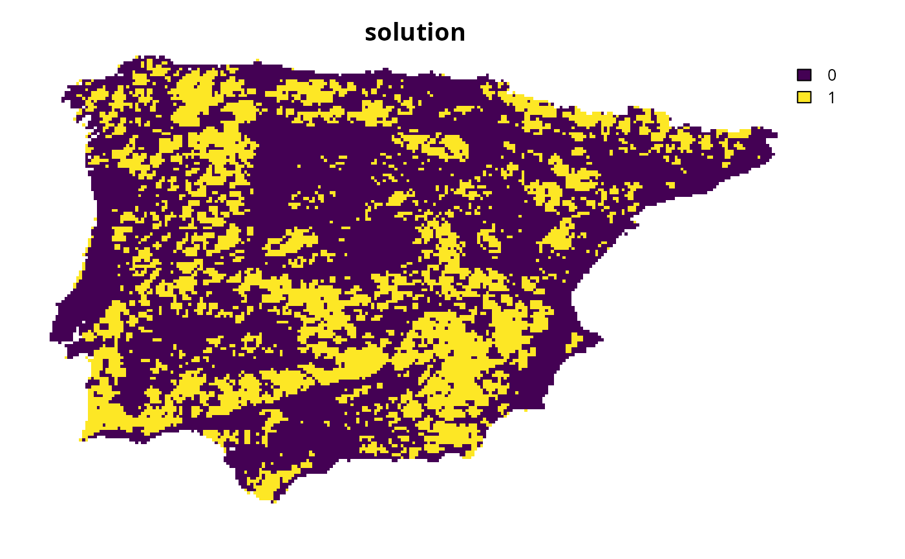

Specify targets based on a set of rules for ecological and ecosystem
criteria. This is a customizable version of the
approach in Harris and Holness (2023).
To help prevent widespread features from obscuring priorities,
targets are capped following Butchart et al. (2015).
This method was designed to help set targets for a broad range of features
(e.g., species, ecosystems, ecosystem services, ecological processes)
at local and national scales.
Note that this function is designed to be used with add_auto_targets()
and add_group_targets().
Usage
spec_rule_targets(
baseline_relative_target,
rules_relative_target,
data,
cap_area_target = 1e+06,
area_units = "km^2"
)Arguments
- baseline_relative_target
numericvalue indicating the baseline target values as a proportion (ranging between 0 and 1). Depending on context of the prioritization exercise, a value of 0.3 (i.e., 30%) may be appropriate (Harris et al. 2023).- rules_relative_target
named
numericvector with name-value key pairs denoting the values that should be added together when calculating the relative target for a given feature. Note that values must range between -1 and 1, and the names must correspond to column names ofdata.- data
data.frameindicating if each feature meets the criteria for applying each rule (or not) during the target calculations. Here, each row must correspond to a different feature, and each column contains information about the feature (perfeature_names(x)). In particular,datamust have a"feature"column that containscharactervalues with the feature names. Additionally,datamust also contain columns withlogical(TRUE/FALSE) values that indicate if the feature meets a particular criterion for calculating targets. For example,datacould contain columns that indicate if each feature corresponds to a threatened species, ecosystem service, or culturally important site. Note that if different rules should be applied to species based on their particular threat status (e.g., Critically Endangered and Vulnerable species should receive different target thresholds), thendatashould contain a column for each threat status (separately).- cap_area_target
numericvalue denoting the area-based target cap. To avoid setting a target cap, a missing (NA) value can be specified. Defaults to 1000000 (i.e., 1,000,000 km2).- area_units
charactervalue denoting the unit of measurement for the area-based arguments. Defaults to"km^2"(i.e., km2).
Value
An object (TargetMethod) for specifying targets that
can be used with add_auto_targets() and add_group_targets()
to update the targets for a problem().
Details
This method has been applied to set target thresholds at national
scales (e.g., Harris et al. 2023).
It is based on the rationale that it is appropriate to set the target
for a feature based on a linear combination of values.
When using this method in a planning exercise, it is important to ensure
that the criteria and values used to parameterize the rules
reflect the stakeholder objectives.
Additionally, the baseline relative target (per baseline_relative_target)
and cap threshold (per cap_area_target and area_units) may need to
set based on the features and spatial extent of the planning region.
Please note that this function is provided as convenient method to
set targets for problems with a single management zone, and cannot
be used for those with multiple management zones.
Mathematical formulation
This method provides a flexible approach for setting target thresholds based
on a set of rules.
To express this mathematically, we will define the following terminology.
Let \(f\) denote the total abundance of a feature (e.g., geographic
range), \(b\) denote the baseline relative target threshold
(per baseline_relative_target), and let \(c\) denote the cap threshold
(per cap_area_target and area_units).
To describe the rules, let \(U\) denote the set of rules
(indexed by \(u\)), \(d_u\) indicate if the target for
the feature should be calculated based on each rule \(u \in U\)
(using binary values, per data), and \(a_u\) denote the value
that should be added to the target given each rule \(u \in U\)
(per rules_relative_target).
Given this terminology, the target threshold (\(t\)) for the feature
is calculated as follows.
$$
t = min(f \times max(min(b + \sum_{u \in U} d_u \times a_u, 1), 0), c)
$$
Data calculations
This function involves calculating targets based on the spatial extent
of the features in x.
Although it can be readily applied to problem() objects that
have the feature data provided as a terra::rast() object,
you will need to specify the spatial units for the features
when initializing the problem() objects if the feature data
are provided in a different format. In particular, if the feature
data are provided as a data.frame or character vector,
then you will need to specify an argument to feature_units when
using the problem() function.
See the Examples section of the documentation for add_auto_targets()
for a demonstration of specifying the spatial units for features.
References
Butchart SHM, Clarke M, Smith RJ, Sykes RE, Scharlemann JPW, Harfoot M, Buchanan GM, Angulo A, Balmford A, Bertzky B, Brooks TM, Carpenter KE, Comeros‐Raynal MT, Cornell J, Ficetola GF, Fishpool LDC, Fuller RA, Geldmann J, Harwell H, Hilton‐Taylor C, Hoffmann M, Joolia A, Joppa L, Kingston N, May I, Milam A, Polidoro B, Ralph G, Richman N, Rondinini C, Segan DB, Skolnik B, Spalding MD, Stuart SN, Symes A, Taylor J, Visconti P, Watson JEM, Wood L, Burgess ND (2015) Shortfalls and solutions for meeting national and global conservation area targets. Conservation Letters, 8: 329–337.
Harris LR, Holness SD (2023) A practical approach to setting heuristic marine biodiversity targets for systematic conservation planning. Biological Conservation, 285: 110218.
See also
Other target setting methods:
spec_absolute_targets(),
spec_area_targets(),
spec_duran_targets(),
spec_interp_absolute_targets(),
spec_interp_area_targets(),
spec_jung_targets(),
spec_max_targets(),
spec_min_targets(),
spec_polak_targets(),
spec_pop_size_targets(),
spec_relative_targets(),
spec_rl_ecosystem_targets(),
spec_rl_species_targets(),
spec_rodrigues_targets(),
spec_ward_targets(),
spec_watson_targets(),
spec_wilson_targets()
Examples
# \dontrun{
# set seed for reproducibility
set.seed(500)
# load data
sim_complex_pu_raster <- get_sim_complex_pu_raster()
sim_complex_features <- get_sim_complex_features()
# calculate total distribution size for features in km^2
feature_size <- as.numeric(units::set_units(
units::set_units(
terra::global(sim_complex_features, "sum", na.rm = TRUE)[[1]] *
prod(terra::res(sim_complex_features)),
"m^2"
),
"km^2"
))
# simulate data that provide additional information for each feature
rule_data <- tibble::tibble(feature = names(sim_complex_features))
# add a column indicating if each feature has a small distribution,
rule_data$small_distribution <- feature_size <= 1000
# add a column indicating if each feature has a large distribution,
rule_data$large_distribution <- feature_size >= 5000
# add a column indicating if each feature has low quality data
# associated with it, based on random simulated values
rule_data$low_quality <- sample(
c(TRUE, FALSE), terra::nlyr(sim_complex_features),
replace = TRUE, prob = c(0.2, 0.8)
)
# next, we will add simulate dat for columns indicating the threat status of
# the features. since all columns must contain logical (TRUE/FALSE) values,
# we will add a column for each threat status separately. note that these
# values will be simulated such that a feature will only have a value of
# TRUE for, at most, a single threat status
# add a column indicating if each feature has a Vulnerable threat status
rule_data$vulnerable <- sample(
c(TRUE, FALSE), terra::nlyr(sim_complex_features),
replace = TRUE, prob = c(0.3, 0.7)
)
# add a column indicating if each feature has an Endangered threat status,
# based on random simulated values
rule_data$endangered <- sample(
c(TRUE, FALSE), terra::nlyr(sim_complex_features),
replace = TRUE, prob = c(0.3, 0.7)
) & !rule_data$vulnerable
# add a column indicating if each feature has a Critically Endangered threat
# status, based on random simulated values
rule_data$critically_endangered <- sample(
c(TRUE, FALSE), terra::nlyr(sim_complex_features),
replace = TRUE, prob = c(0.3, 0.7)
) & !rule_data$endangered & !rule_data$vulnerable
# preview rule data
print(rule_data)
#> # A tibble: 100 × 7
#> feature small_distribution large_distribution low_quality vulnerable
#> <chr> <lgl> <lgl> <lgl> <lgl>
#> 1 feature_1 FALSE TRUE TRUE TRUE
#> 2 feature_2 FALSE TRUE FALSE FALSE
#> 3 feature_3 FALSE TRUE TRUE TRUE
#> 4 feature_4 FALSE TRUE FALSE FALSE
#> 5 feature_5 FALSE TRUE TRUE TRUE
#> 6 feature_6 FALSE TRUE FALSE TRUE
#> 7 feature_7 FALSE TRUE FALSE FALSE
#> 8 feature_8 FALSE TRUE TRUE FALSE
#> 9 feature_9 FALSE TRUE TRUE TRUE
#> 10 feature_10 FALSE TRUE FALSE FALSE
#> # ℹ 90 more rows
#> # ℹ 2 more variables: endangered <lgl>, critically_endangered <lgl>
# create problem with rule based targets, wherein targets are calculated
# with a baseline of 30%, features with a small distribution are assigned
# targets of an additional 10%, features with a large distribution are
# assigned targets reduced by 10%, features with low quality data are
# assigned targets reduced by 10%, features with a Vulnerable threat status
# are assigned targets of an additional 5%, features with an Endangered
# threat status are assigned targets of an additional 10%, and features with
# a Critically Endangered threat status are assigned targets of an
# additional 20%
p1 <-
problem(sim_complex_pu_raster, sim_complex_features) %>%
add_min_set_objective() %>%
add_auto_targets(
method = spec_rule_targets(
baseline_relative_target = 0.3,
rules_relative_target = c(
"small_distribution" = 0.1,
"large_distribution" = -0.1,
"low_quality" = -0.1,
"vulnerable" = 0.05,
"endangered" = 0.1,
"critically_endangered" = 0.2
),
data = rule_data
)
) %>%
add_binary_decisions() %>%
add_default_solver(verbose = FALSE)
# solve problem
s1 <- solve(p1)
# plot solution
plot(s1, main = "solution", axes = FALSE)

# }